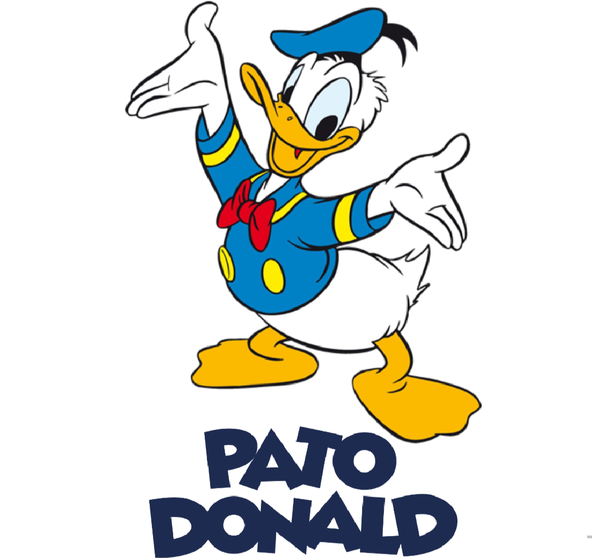

Personagens Clássicos


Origem do Mickey Mouse
O fundador da Disney, Walter Elias Disney, conhecido por Walt Disney, adorava arte, e por esse motivo
tinha prazer em desenhar. Sua primeira companhia foi fomentada por ele assim que retornou da Primeira
Guerra Mundial (1914-1919). começou a vender desenhos dos personagens que ilustrava desde sua infância,
porém estava dificil permanecer com seu empreendimento, pois não tinha dinheiro para se manter e
precisou, inclusive, morar com amigos. Assim, aos 22 anos Disney declarou definitivamente a falência da
sua companhia.Enquanto isso, Disney era pressionado pela família para achar um emprego, porém acreditava
em seus sonhos e na sua arte, e queria ser empreendedor, então, voltou para Hollywood e desenvolveu um
novo estúdio em sua própria garagem. Mesmo trabalhando com entusiasmo, novamente ele foi ficando sem
dinheiro e se endividando aos poucos.Consequentemente, Walt voltava a estaca zero, porém, junto aos seus
sócios Roy e Iwerks, que também necessitavam seguir adiante. Foi então que surgiu o camundongo Mortimer,
conhecido atualmente com Mickey Mouse, nome escolhido pela esposa de Walt, Lily.
Mickey Mouse foi idealizado para ser o oposto da falta de honestidade, encontrada por Walt em seu
trajeto. A ideia é que o rato seria, gentil, honesto, educado e amoroso. Afinal, era isso o que ele
desejava ter em sua família, amigos e equipe de trabalho.
Agora o sucesso estava batendo à sua porta. Ele precisou traçar um caminho árduo mas o triunfo havia
finalmente chegado após um orçamento pequeno. Ele não contratou dubladores para o primeiro filme, pois
os sócios faziam essas primeiras dublagens. Neste momento nasce a companheira de Mickey, Minnie Mouse, e
logo após, a insistência de Walt por mais quatro filmes com o rato, devido a falta de interesse do
mercado pelos três primeiros. E assim, surgiu o fenômeno americano Mickey Mouse.